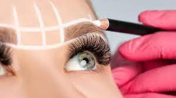
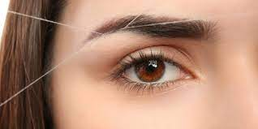
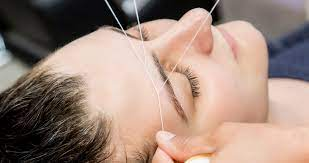

El lifting de pestañas es un estiramiento y alisamiento de tu pestaña natural llevándola a su máxima longitud.
Gracias a este tratamiento estético, que apenas se tarda una hora en realizar y que es apto para hombres y mujeres, se puede conseguir que las pestañas se vean más largas y curvadas, de una manera natural, pues no hay que olvidar que se consigue con nuestro propio pelo, sin añadidos como ocurre con las extensiones de pestañas.
Laminado de cejas

¿Qué es el Laminado de cejas o “Brow Lamination”? Se trata de un tratamiento semipermanente que se aplica sobre el vello de la ceja y consigue un efecto de ceja “peinada” hacia arriba, alisando el pelo más rebelde y fijando la forma deseada
Epilación de cejas con hilo

La técnica perfecta para transformar la forma de cualquier ceja en unas cejas pobladas y
excepcionalmente definidas, la depilación de las cejas con hilo es una técnica de gran precisión
que implica el uso de hilo de algodón largo y trenzado para arrancar de raíz incluso el pelo más
fino situado alrededor de las cejas.
Epilación facial

La depilación del vello facial en las mujeres es bastante más común de lo que se piensa. Si bien en la mayoría de los casos no es igual que el de los hombres, muchas mujeres recurren a la depilación para eliminar ciertas zonas en las que el vello se acumula más de lo que debería.
La depilación facial no engloba simplemente a la parte superior de los labios, sino también las cejas, frente, lados de la cara o la barbilla e incluso las patillas. Esto es un tema que tiene que ver con el tipo de piel, las hormonas o algún tratamiento que se pueda estar tomando.
Lo cierto es que en muchas ocasiones este tipo de vello puede generar conflicto y problemas de autoestima. Pero como con todo, actualmente existen muchos métodos y alternativas para eliminar el vello facial de la forma más indolora y fácil posible. Por eso, desde Bekia Belleza te explicamos cuáles son y sus ventajas e inconvenientes.